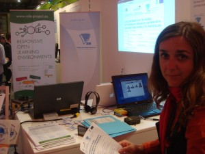

Scrobbling Learning
{kind=link}
 Scrobbling is a process last.fm uses to figure out the type of music you like. It is about 90% accurate and over time builds a more and more accurate profile about what you "might like". A while back we have entered into an Internet age of recommendations. Amazon adopted it a long time ago, it is about 20% accurate for me.
Scrobbling is a process last.fm uses to figure out the type of music you like. It is about 90% accurate and over time builds a more and more accurate profile about what you "might like". A while back we have entered into an Internet age of recommendations. Amazon adopted it a long time ago, it is about 20% accurate for me.
Recommendation engines do work but they must rely on users not only "doing" tasks but feeding back if they felt it was a positive/negative experience and if the recommendation engine should of recommended the item or not. For example even though last.fm is 90% accurate for me sometimes I block a song but get the rest of the songs from that artist.
A project called ROLE intends to profile a learner based and recommend content based on their learning profile.

Currently the project is in an abstraction and development phase. I appreciate the concept. I think it is possible, doable and feasible and should have a number of practical purposes.
ROLE has many more challenges to face, such as what type of content is being delivered and is the learner more focused on a type of content IE biology or a type of learning style or will it approach it with a 3d angle of trying to profile the style of learner and the content desired?
The largest challenge ROLE faces it the natural opposition from educators feeling like their workload is being converted into a factory style process. I hope ROLE get a decent video up on YouTube explaining the challenges they face and how they intend to address them. It appears for an open project they are having lots of problems communicating to the wider public exactly what they are trying to achieve and why developers should get involved. I hear some recent employees have been brought in to address this and I think that is a huge + and I'm looking forward to seeing what they achieve!